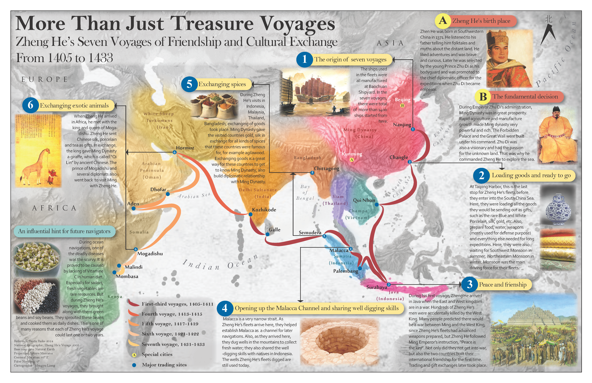

§ More Than Just Treasure Voyages

This map is the final project for Geo370 from 2014. The initial map was not taking visual hierarchy into serious consideration, which this version has improved greatly on. This map poster is not intended to capture the precise routes of each voyage. Its purpose is to inform map readers of the significance of Zheng He's voyages, and to inspire people to explore Chinese history.
Zheng He is not only one of the most famous voyagers and explorers in world history, but also one of the most well-known diplomat officers in Chinese history. I've learned about his stories and how his seven voyages to many countries changed the way ancient China saw the world. More importantly, my hometown is also Kunming, China — the same as Zheng He!